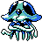
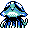

#073
Tentacruel
WaterPoison
The tentacles are normally kept short. On hunts, they are extended to ensnare and immobilize prey
Base stats Total 435
HP80
Attack70
Defense65
Speed100
Special120
Details
- Species
- Jellyfish
- Height
- 5'03"
- Weight
- 121.0 lb
- Catch rate
- 60
- Base exp
- 205
- Growth
- Slow
Level-up moves
LevelMoveType
StartAcidPoison
StartSupersonicNormal
StartWrapNormal
Lv 9Poison StingPoison
Lv 12Water GunWater
Lv 15ConstrictNormal
Lv 24ScreechNormal
Lv 25BubblebeamWater
Lv 31BarrierPsychic
Lv 41SurfWater
Lv 46Hydro PumpWater
TM / HM
TM03 Swords DanceTM06 ToxicTM09 Take DownTM10 Double-EdgeTM11 BubblebeamTM12 Water GunTM13 Ice BeamTM14 BlizzardTM15 Hyper BeamTM21 Mega DrainTM31 MimicTM32 Double TeamTM33 ReflectTM34 BideTM39 SwiftTM40 Sludge BombTM44 RestTM50 SubstituteHM01 CutHM03 Surf